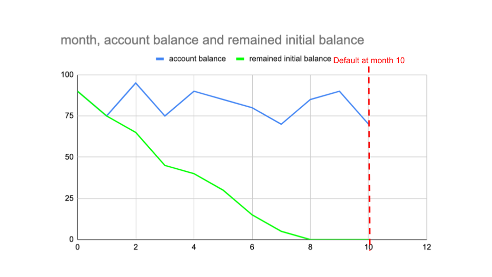
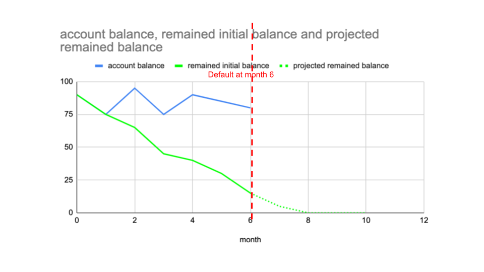

Current Expected Credit Loss, or CECL, see (Financial Accounting Standards Board 2016), is the latest guidelines publised by Financial Accounting Standards Board (FASB), regarding the Allowance for Loan and Lease Losses (ALLL). Under CECL, the lending company is required to reserve the expected “lifetime” credit loss for the loan as early as when the loan is originated as opposed to the “incurred” loss under the old standard. The main ideas of the CECL are
The first point requires the forward-looking forecast for the foreseable future. Beyond the foreseable future (2 years as common industry practice), it’s plausible to assume the through-the-cycle (TtC) probability of default (PD). A popular approach is to incorporate the economic indicators into the loss forecasting model and make the loss forecast based on the projection of economic indicators made by internal and/or external economists or senior management. Another approach would be to model the through-the-cycle (TtC) loss rate and then add model overlay based on the forward economic projection on top of the model forecast.
The 2nd major difference is the requirement to reserve against the lifetime credit loss which means that the lending company not only has to have reserve to cover the loss occur in the following year, it has to have enough reserve to cover the total loss that are expected to occur in the future.
For example, a loan $100K, 10 year loan, annual principal payment as 10K and has annual probability of default (PB) = 3%,
Although it’s unlikely for a loan to have uniform distribution of PD accross the life of the loan as the PD is usually quite low at the end of the loan, the example illustrates that the CECL reserve rate is significantly different from that of the incurred loss for a typical term loan.
Another point of the CECL implementation is the allowance should consider not only the unpaid principal balance but the net amortized cost:
\[\text{Amortized cost} = \text{Principal} + \text{Premium/Discount}+\text{Deferred loan fees} + \text{Accrued interest & other adjustments}\] There are two ways that are common used in the industry. First is to directly model the credit loss based on the amortised cost. Another way, a simpler way, is to model the credit loss based on unpaid principal balance and make adjustment on top of that. For simplicity, the following content are based on unpaid principal balance only.
In this section, we specifically discuss the line of credit under the CECL regulation. As specified in 326-20-30-11 of (Financial Accounting Standards Board 2016), the lender shall estimate the expected loss over the contractual period unless the obligation is “Unconditionally Cancellable”. The credit card normally falls into this category as the ‘term & conditions’ often specifies the lender’s authority to unconditionally cancel the credit line provided that the borrower is still obligated to pay the outstanding principal & interest balance. The covid-19 in 2020 is a good example as numorous fintech online lenders put the undrawn credit line on hold amid the crisis. FASB gives an example of credit card portfolio that is unconditionally cancellable in 326-20-55-54 to 326-20-55-56 of (Financial Accounting Standards Board 2016).
( O ) Lifetime of the outstanding balance
( X ) Lifetime of the credit card account
The unconditionally cancellable would lead to the conclusion that, it’s the outstanding balance that the lender should reserve against, instead of the credit card account itself. The implication is that not only the credit risk of uncommitted balance doesn’t need to be covered by the ALLL, but also that the ALLL should only concern the lifetime of the outstanding balance at the reporting date instead of the lifetime of the credit card account.
That leads us to the next question: how we estimate the paydown of the balance and the behavioural maturity of the balance given
The Moody’s report, see (Fieldhouse 2018), gives clear demonstration of different approaches on how to estimate the balance paydown curve. Here, I would like to illustrate, by using the FIFO approach, how the balance paydown curve impact the estimation of PD & EAD in the training dataset.
Case 1: Default after balance paydown

Case 2: Default before balance paydown

Fieldhouse, D. 2018. Modeling Credit Card Losses Under Cecl. Moody’s Analytics. https://www.moodysanalytics.com/.
Financial Accounting Standards Board. 2016. Measurement of Credit Losses on Financial Instruments. https://www.fasb.org/jsp/FASB/Document_C/DocumentPage?cid=1176168232528&acceptedDisclaimer=true.